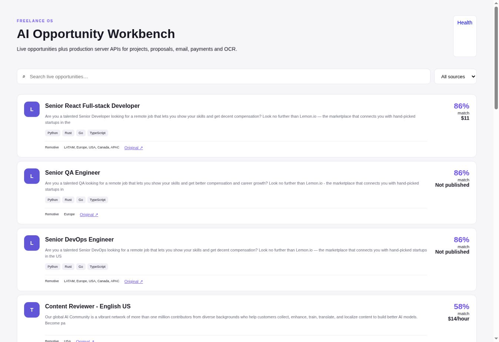
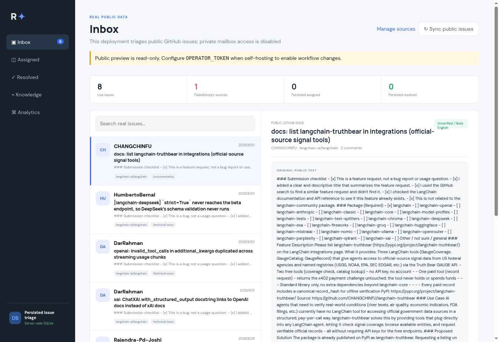

Structured generation, classification, translation, retrieval-oriented flows and human approval gates.
Software & AI Engineer
I build systems that do the work.
AI workflows, developer tools, browser automation and backend infrastructure designed for real operation—not a polished mockup.
专注 AI 工作流、开发者工具、浏览器自动化与后端基础设施。每项能力都能通过源码、测试或在线系统验证。
2 live previewsPublic, read-only deployments
Connector mergedSyncBridge PR #3 + CI evidence
Live E2E pendingWaiting for third-party sandboxes
What I deliver
Engineering capabilities
Practical systems with explicit boundaries, observable behavior and a clear path from requirement to verification.
Browser execution, API integrations, resumable tasks and evidence-backed completion checks.
Typed APIs, PostgreSQL state, task queues, concurrency, retries and operational metrics.
CI diagnosis, policy enforcement, security boundaries and review-safe GitHub automation.
Selected work
Inspectable projects
No invented clients or vanity metrics. Open the product, inspect the source and check the engineering decisions.
WordPress → CRM operationsCI verified · live E2E pending
SyncBridge
Turns WordPress leads and CSV records into reliable CRM-ready data without duplicate contacts or silent failures.
Contact Form 7 field mapping, HTTPS/HMAC verification, PostgreSQL-backed idempotency, retry recovery and cross-platform deployment documentation. The production connector is merged; a real WordPress staging site and CRM sandbox are still required before claiming live end-to-end verification.
Opportunity operationsLive read-only
AI Freelance Workbench
Converts scattered public opportunities into a durable, auditable application pipeline.

Server-side persistence, stage transitions, bounded audit history and privacy-safe aggregate monitoring. External applications remain human-approved.
Support operationsLive read-only
Multilingual Support Copilot
Brings real GitHub issues into one triage surface while keeping operator actions protected.

API-verified issue ingestion, persistent triage state, signed idempotent webhooks and fail-closed operator authentication.
Additional backend and infrastructure work remains available on GitHub. This page intentionally emphasizes three systems with the clearest customer outcomes instead of repository count.
How I work
Evidence before claims.
A feature is complete only when its behavior can be inspected. Private credentials and personal records stay outside public repositories.
PythonC++RustGoTypeScriptNext.jsPostgreSQLPlaywrightDockerCloud deployment
Define the boundaryState what the system does, what it cannot do and where human approval remains required.
Make failure observableSource health, logs, status transitions and evidence are part of the product—not hidden implementation detail.
Ship reviewable workDeliver source, documentation, automated checks and a working surface whenever the project supports one.
Build something useful
Bring the business problem. Get a scoped milestone.
Best fit: focused products, integrations, automation, developer tools, API work and technical rescue projects.
Please do not include credentials or production data. Paid milestones only; no unpaid trials.